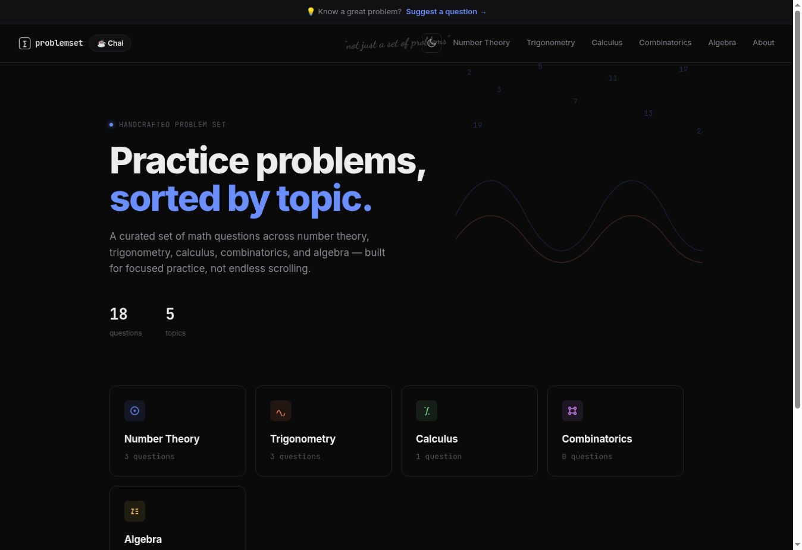
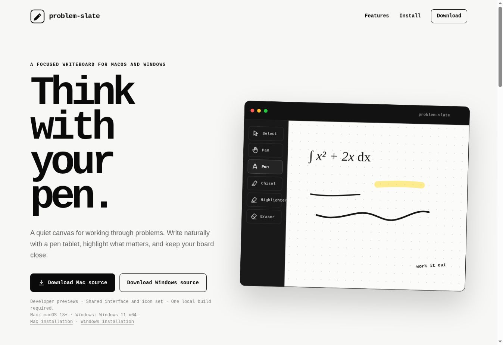

01 / PROBLEMSETWEB PROJECT

ProblemSet
Less scrolling. More solving.
Curated math practice, organized by topic — from number theory to calculus. Built to keep the focus on the next question.
Hey, I’m Madhup — a student who loves
mathematics and building things that help.
Small tools. A clearer way to think.

Less scrolling. More solving.
Curated math practice, organized by topic — from number theory to calculus. Built to keep the focus on the next question.

A quiet canvas for working things out.
A focused whiteboard for macOS and Windows. Write, sketch, and give your next problem the space it needs.
A home for my mathematical writing.
A collection of my mathematics papers and notes, with each PDF just a click away. A space to share the ideas I’m exploring.
I’m Madhup, a high school student in India with a love for mathematics and a curiosity for how things work.
I build tools around the way I learn — a place to work through an idea, a collection of problems worth spending time on. ProblemSlate, ProblemSet, and my mathematical writing are part of that exploration.
One idea at a time.
See what I’m building